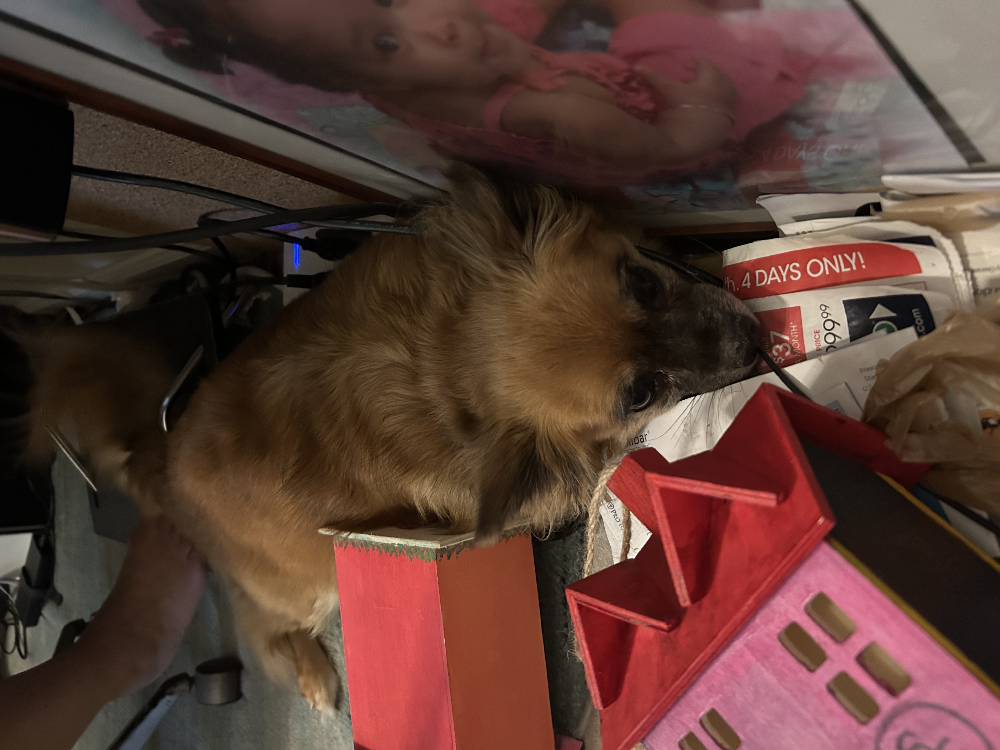

In photography, it is common to catch particular moments on camera that allow for certain colors to stand out. In the following photographs, please note the places where red, oranges, or violet are used either to draw your attention, or make other elements in the photo stand out.